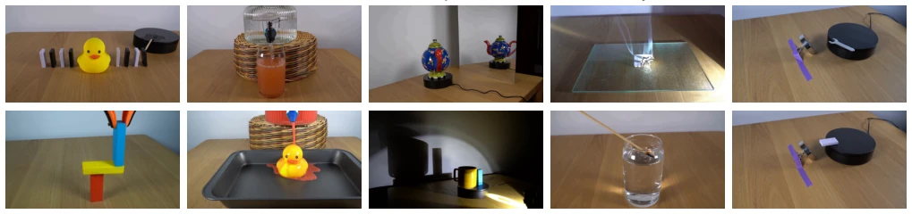
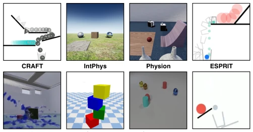
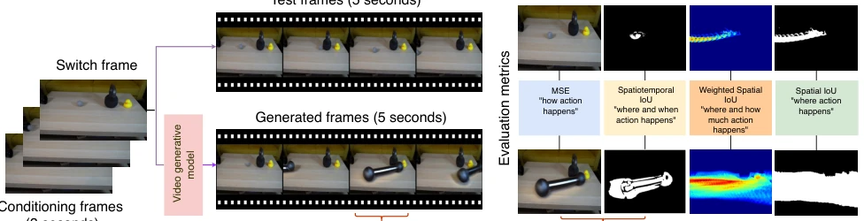
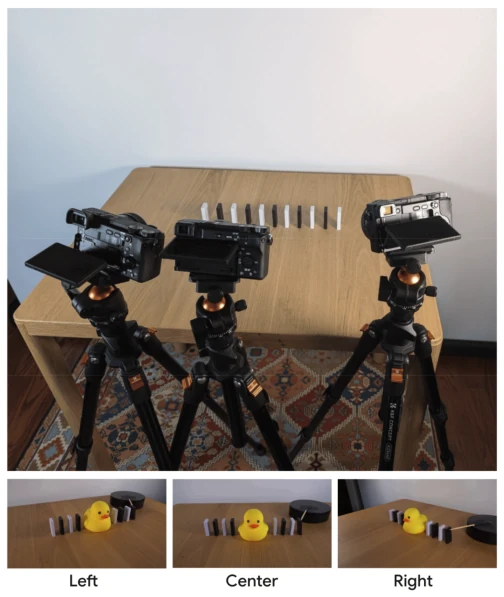
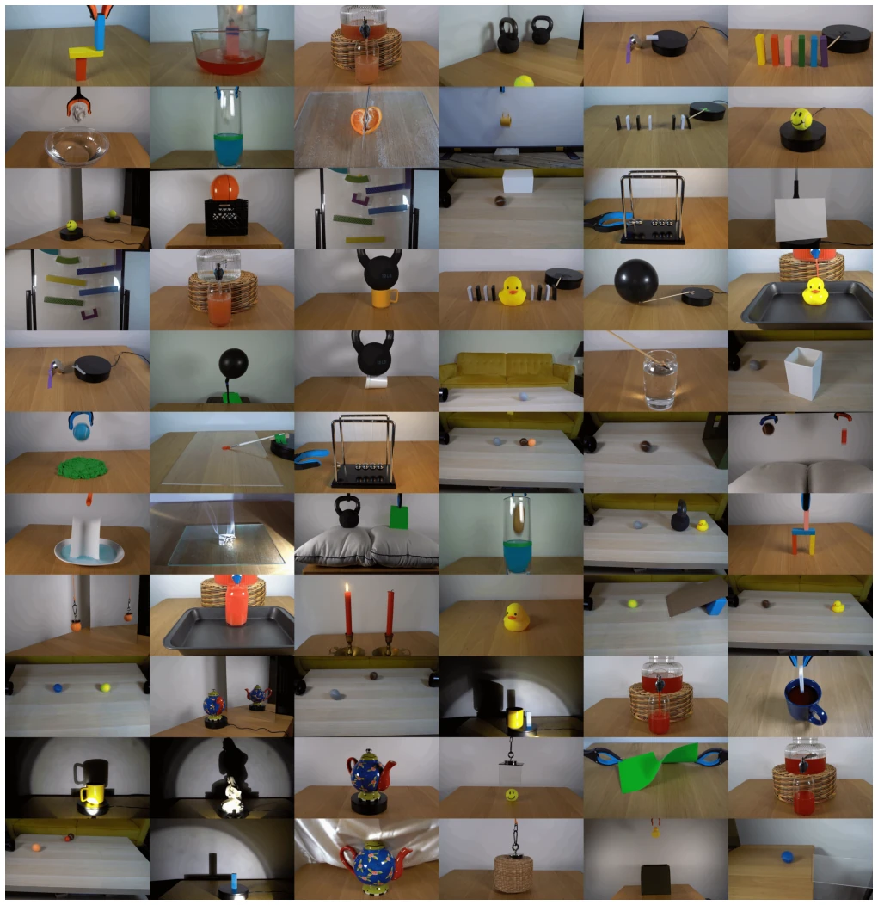
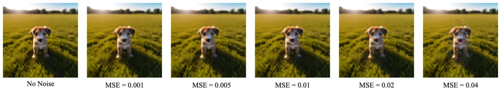
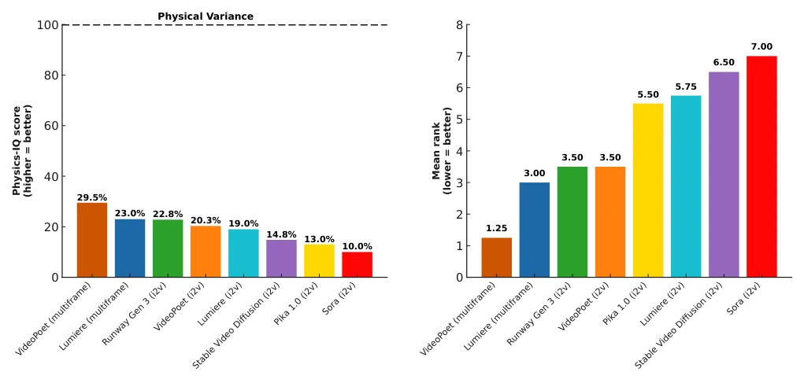
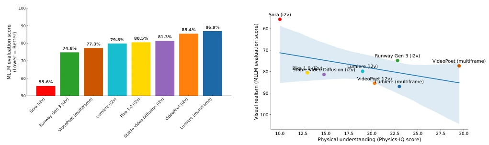
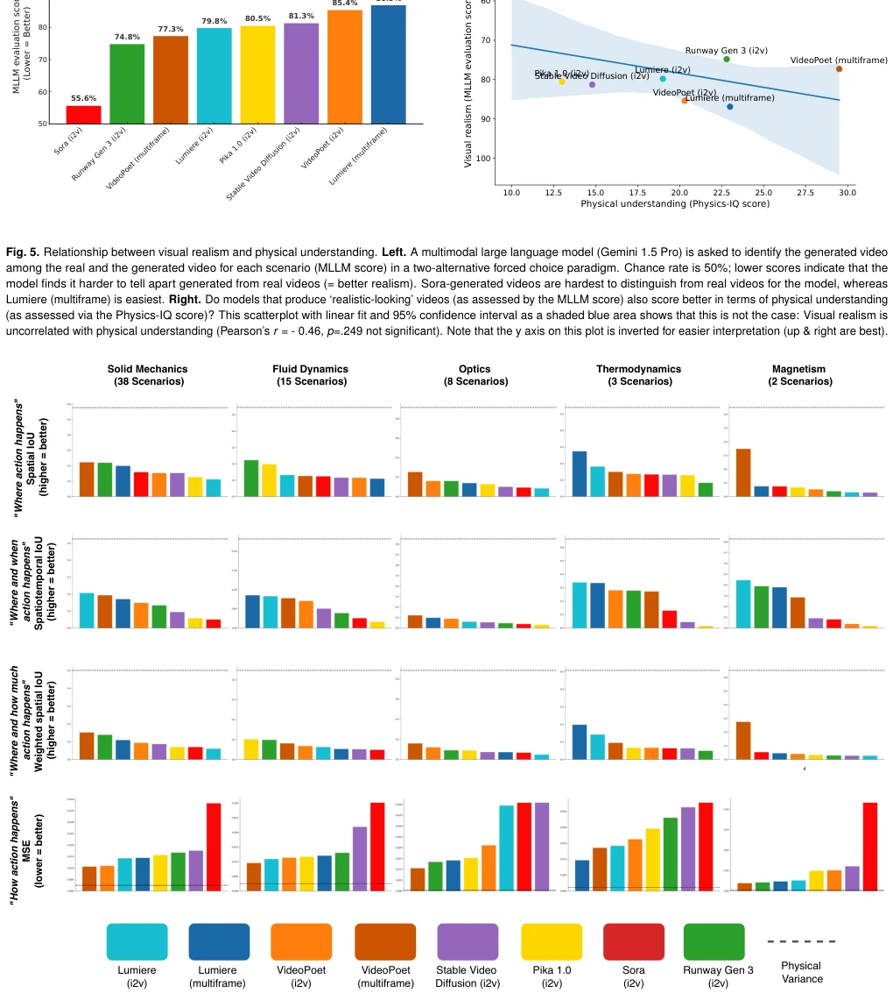
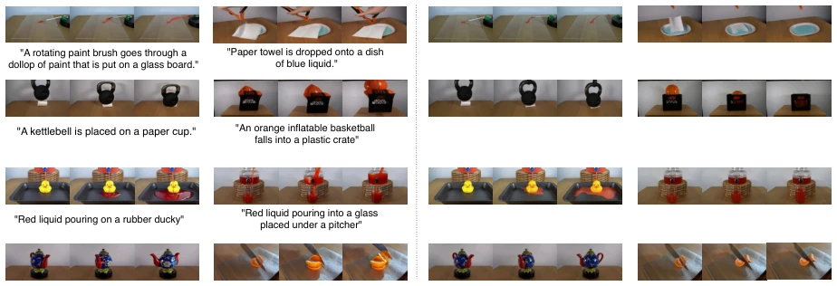

Do generative video models understand physical principles?
Saman Motamed, Laura Culp, Kevin Swersky, P. Jaini, Robert Geirhos abspdf
论文点评Review
这篇论文给火爆的 AI 视频生成圈泼了一盆冷水。大家都在吹 Sora 们是“世界模型”，但这帮模型其实更像是“像素预测器”。作者搞了个 Physics-IQ 基准测试，用真家伙（不是合成数据）来考考这些模型懂不懂物理。结果很尴尬：最好的模型得分才 29.5%，离真实物理方差（100%）差得远。最讽刺的是，视觉越逼真的（比如 Sora），物理理解反而不见得更好。这说明“看着像真的”不等于“真的懂”。虽然论文没否定未来可能通过预测学会物理，但现在这帮模型离“懂世界”还差得远，更多是在背训练集里的套路，物理定律掌握有限。
This paper pours cold water on the booming AI video generation community. Everyone is hyping Sora-like models as 'world models', but these models are actually more like 'pixel predictors'. The authors devised a Physics-IQ benchmark test, using real-world data (not synthetic data) to test if these models understand physics. The results were unfavorable: the best model scored only 29.5%, far from the true physical variance (100%). Most ironically, the more visually realistic (e.g., Sora), the physical understanding is not necessarily better. This indicates that 'looking real' does not equal 'truly understanding'. Although the paper does not deny the possibility of learning physics through prediction in the future, these models are now far from 'understanding the world', more memorizing patterns in the training set, with limited grasp of physical laws.
The core controversy lies in: do video generation models learn physical laws by 'watching' videos, or just memorize pixel patterns? Although next frame prediction (next frame prediction) is considered key to understanding the world (similar to LLM predicting the next token), lack of interaction (embodied interaction) may lead to models failing to distinguish correlation and causality (causality rationale). Existing benchmarks such as Physion (17), CRAFT (19), IntPhys (20) mostly use synthetic data (synthetic data), suffering from distribution shift (distribution shift) between real and synthetic, unable to accurately evaluate models trained on natural videos. PhysGame (34), PhyWorld (40) etc. also have their own focuses, but lack comprehensive real-world physical understanding tests. This paper aims to fill this gap, providing a quantifiable, real-video-based testbed to verify if visual realism equates to physical understanding.

Fig. 1. Sample scenarios from the Physics-IQ dataset for testing physical understanding in generative video models. Models are shown the beginning of a video (single frame for image2video models; 3 seconds for video2video models) and need to predict how the video continues over the next 5 seconds, which requires understanding different physical properties: Solid Mechanics, Fluid Dynamics, Optics, Thermodynamics, and Magnetism. See here for an animated version of this figure.

Fig. 3. A qualitative overview of recent synthetic datasets related to physical understanding (17–20, 37–40). These datasets are great for the purposes they were designed for, but not ideal for evaluating models trained on real-world videos due to the distribution shift.
The overall process is divided into three parts: dataset construction, evaluation protocol, and metric design. First, construct the Physics-IQ dataset, containing 396 8-second videos, covering 66 physics scenes (solid mechanics, fluid mechanics, optics, thermodynamics, magnetism), each scene 3 views x 2 takes to capture physical variance. Evaluation protocol adopts video generation paradigm: input 3s conditioning video or single frame (switch frame), model predicts subsequent 5s. Compare generated video with Ground Truth. Metric design is the core innovation, abandoning traditional FVD/PSNR, designing four physical understanding metrics: Spatial IoU (action location), Spatiotemporal IoU (spatiotemporal location), Weighted Spatial IoU (action magnitude), MSE (pixel-level fidelity). Combined into Physics-IQ Score, normalized to physical variance baseline (100%). Additionally, use MLLM (Gemini 1.5 Pro) for 2AFC test to evaluate visual realism, to compare the relationship between physical understanding and visual quality. This metric system aims to quantify physical rationality rather than purely visual quality.

Fig. 2. Overview of the Physics-IQ evaluation protocol. A video generative model produces a 5 second continuation of the conditioning frame(s), optionally including a textual description of the conditioning frames for models that accept text input. They are compared against the ground truth test frames using four metrics that quantify different properties of physical understanding. The metrics are defined and explained in the methods section. Code to run the evaluation is available at Physics-IQ-benchmark.

Fig. 8. Illustration of recording setup (top) and perspectives (bottom).

Fig. 9. The switch frames (here: center view only) of all scenarios in the Physics-IQ benchmark. A switch frame is the last conditioning frame before a model is asked to predict 5 seconds of future frames.

Fig. 10. Since mean squared error (MSE) values can be hard to interpret, this figure shows the effect of a distortion applied to the scene, serving as a rough intuition for the effect of a MSE at different noise levels.
Tested 8 mainstream models (Sora, Runway Gen 3, Pika, Lumiere, SVD, VideoPoet, etc.). Results show, all models' physical understanding ability severely limited, best model VideoPoet (multiframe) only scored 29.5, far below physical variance baseline. No item in different physics categories was fully solved, solid mechanics performance relatively better. Key finding is visual realism and physical understanding have no significant correlation (Pearson's r = -0.46), Sora visual score highest but physical score low. Ablation analysis shows multiframe conditioning better than single frame. Qualitative analysis finds models often appear hallucinations (hallucinations) or violate physics common sense (e.g., object penetration). Proves current generation models do not truly master physical laws, visual realism more originates from pattern matching in training data rather than causal reasoning.

Fig. 4. How well do current video generative models understand physical principles? Left. The Physics-IQ score is an aggregated measure across four individual metrics, normalized such that pairs of real videos that differ only by physical randomness score 100%. All evaluated models show a large gap, with the best model scoring 29.5%, indicating that physical understanding is severely limited. Right. In addition, the mean rank of models across all four metrics is shown here; the Spearman correlation between aggregated results on the left and mean rank on the right is high (-.92, p < .005), thus aggregating to a single Physics-IQ score largely preserves model rankings.

Fig. 5. Relationship between visual realism and physical understanding. Left. A multimodal large language model (Gemini 1.5 Pro) is asked to identify the generated video among the real and the generated video for each scenario (MLLM score) in a two-alternative forced choice paradigm. Chance rate is 50%; lower scores indicate that the model finds it harder to tell apart generated from real videos (= better realism). Sora-generated videos are hardest to distinguish from real videos for the model, whereas Lumiere (multiframe) is easiest. Right. Do models that produce ‘realistic-looking’ videos (as assessed by the MLLM score) also score better in terms of physical understanding (as assessed via the Physics-IQ score)? This scatterplot with linear fit and 95% confidence interval as a shaded blue

Fig. 6. Performance comparison of video generative models across different physical categories (columns) and metrics (rows). For the top three metrics, higher is better; for the last metric lower values are best. Throughout, physical variance (i.e., the performance that is achievable by real videos differing only by physical randomness) is indicated by a dashed line. Across metrics and categories, models show a considerable lack in physical understanding. More lenient metrics like Spatial-IoU (top row) that only assess where an action occurred lead to higher scores than more strict metrics that also take into account e.g. when or how much action should be taking place.

Fig. 7. We here visualize success and failure scenarios within the fluid dynamics and solid mechanics categories for the two best models, VideoPoet and Runway Gen 3, according to our metrics. Both models are able to generate physics plausible frames for scenarios such as smearing paint on glass (VideoPoet) and pouring red liquid on a rubber duck (Runway Gen 3). At the same time, the models fail to simulate a ball falling into a crate or cutting a tangerine with a knife. See here for an animated version of this figure.